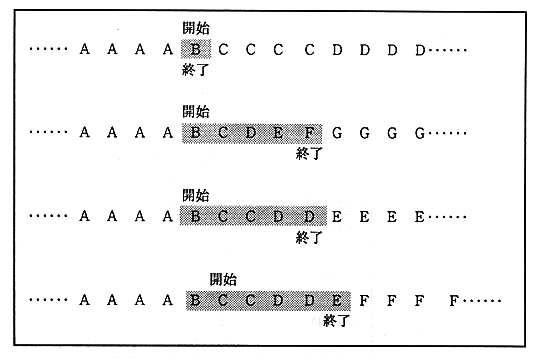

The following figure is an example of a discrepancy series.

Figure 1.1 Example of discrepancy sequence
[Processing unit]
Select the processing unit from the three types shown in the following table. From the beginning, input each character (symbol) by dividing each processing unit boundary.